Utställning
Klinkbåtsutställning

Klicka på bilden för att komma till utställningen
"Den nordiska klinkbåtstraditionen"
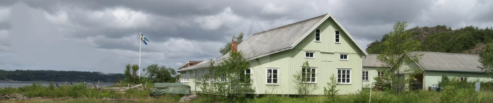
Om vi i våra tankar gör en resa från Strömstad i norr till Vrångö i söder så har det skett stora förändringar i Bohuslän sedan 1500-talet. Då kunde de första bosättningarna byggas tack vare sillperioden.
Kungsviken är en viktig plats där båtbyggarkunskapen levt och utvecklats fram till våra dagar. Kunskapen lever vidare genom att flera moderna varv – Malö, Najad och Hallberg-Rassy – har startat här.
Gösta Johanssons varv är en viktig länk där hela varvsmiljön med byggnader, slip och brygga är bevarade. Det är den totala miljön som är unik och som måste bevaras.
→ Länk till bildspel och intervju med Gösta Johansson (1978–1979)
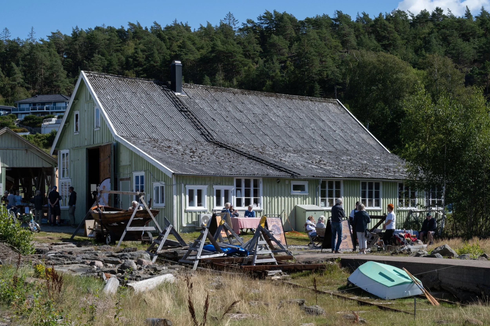
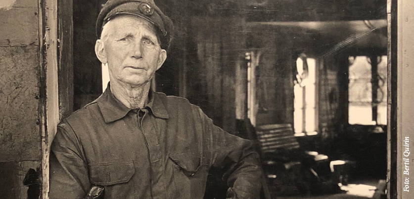
"Hela samhället var uppbyggt kring båtbyggeriet. För många år sen höll de på med 17 byggen i rad nedanför affären." – Gösta Johansson
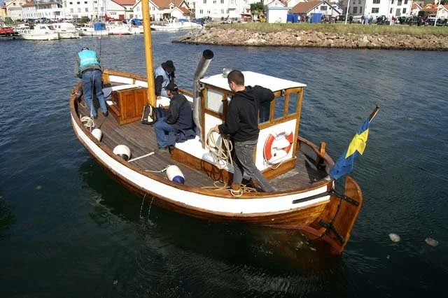
Nästa tillfälle 26 september, därefter 3 och 10 oktober. Alla välkomna!
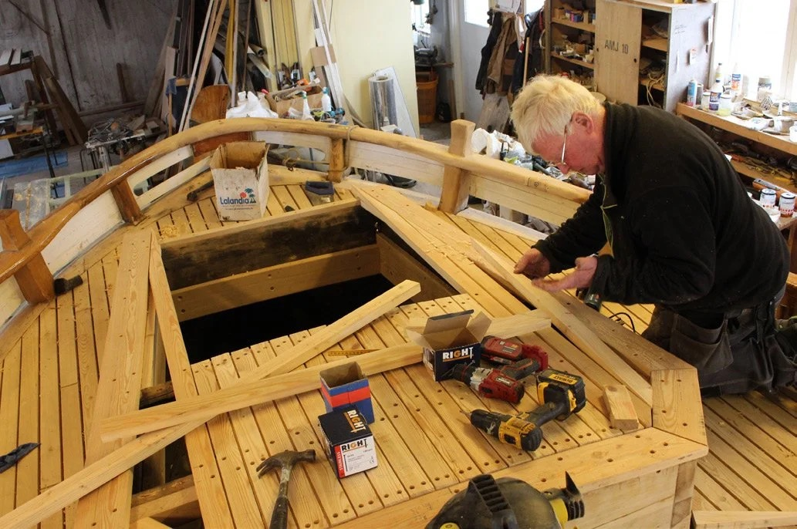
Vi bygger modellbåtar och snickrar tillsammans. Maila info@gostasvarv.se för mer info.
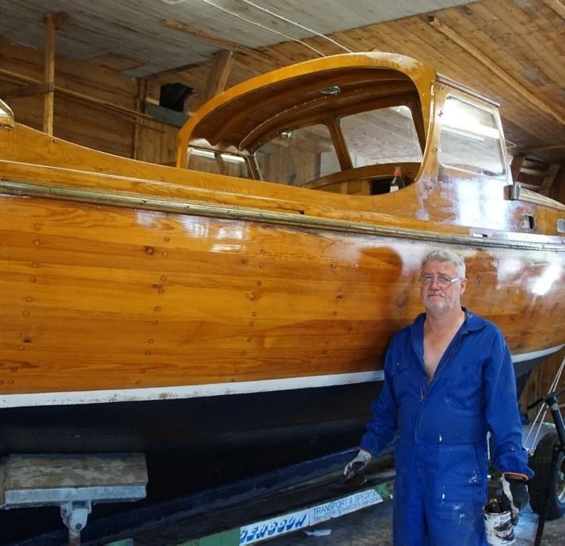
Alla medlemmar välkomna. Föreningens flotta: Polstjernan, Josefin, J14 Myra och bohusekan Lucia samt ett antal ekor.
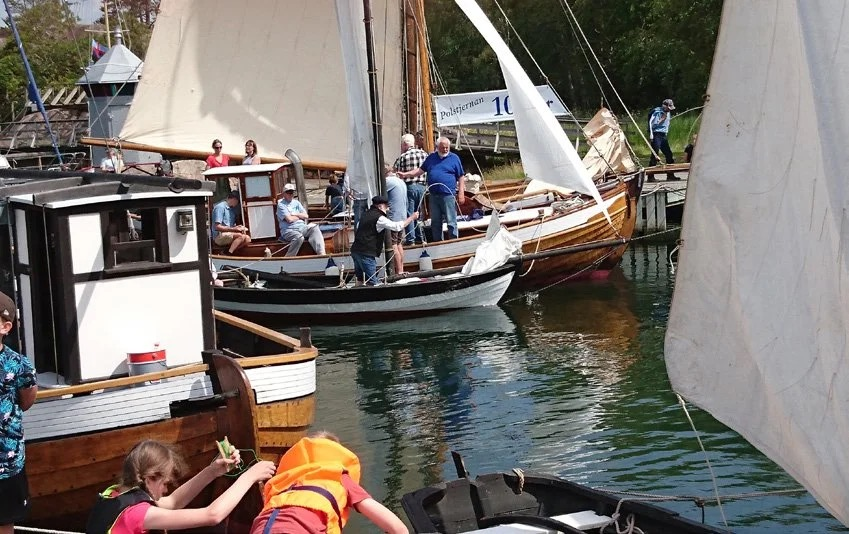
Med besök av nyrenoverade 12:an Princess Svanevit, musikunderhållning, segling och föredrag båda dagarna.
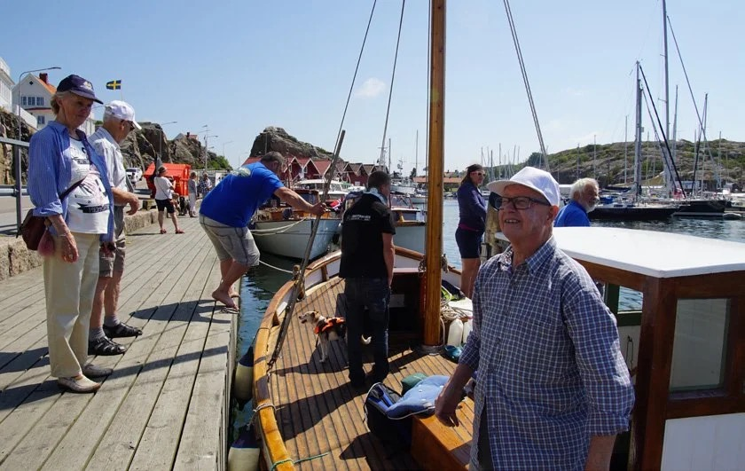
Tag med kräftor och dryck. Dans och gemenskap. Fri entré för medlemmar. Anmälan till info@gostasvarv.se.
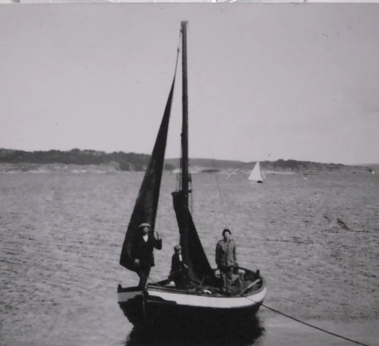
Tio danska ungdomar från Roskilde bodde en vecka på Bassholmen och utförde ett rejält dagsverke på varvet.
Föreningen Gösta Johanssons Varv syftar inte bara till att bevara Göstas minne och varv, utan vi vill bevara och utveckla vårt unika kulturarv av träbåtsbyggande, hantverk, renovering samt underhåll som funnits i Bohuslän, med hjärtat i Kungsviken på Orust.
Föreningen är sedan 2022 huvudägare till varvet och arbetar aktivt med att underhålla varvsbyggnader, slip och såg samt utvecklar föreningens verksamheter.
Vi vill arbeta för en levande varvsmiljö, utveckla barn- och ungdomsverksamhet samt samverka med organisationer och andra föreningar.
Vi samarbetar med Föreningen Westkust som vintertid hyr in sig i varvet.
Polstjernan byggdes i Kungsviken 1919 av Julius i Kilen – Gösta Johanssons far. Den brukades länge som fiskebåt utanför Resteröd och var registrerad med distriktsnummer UA 33.
Efter ett antal ägare har Polstjernan återvänt till Kungsviken. Båten har genomgått en omfattande renovering och ligger sommartid förtöjd vid Göstas brygga, vid det karakteristiskt gröna varvet.
Föreningen äger även den sista båten som Gösta byggde, Josefin – en kravellbyggd snipa – samt två ekor.
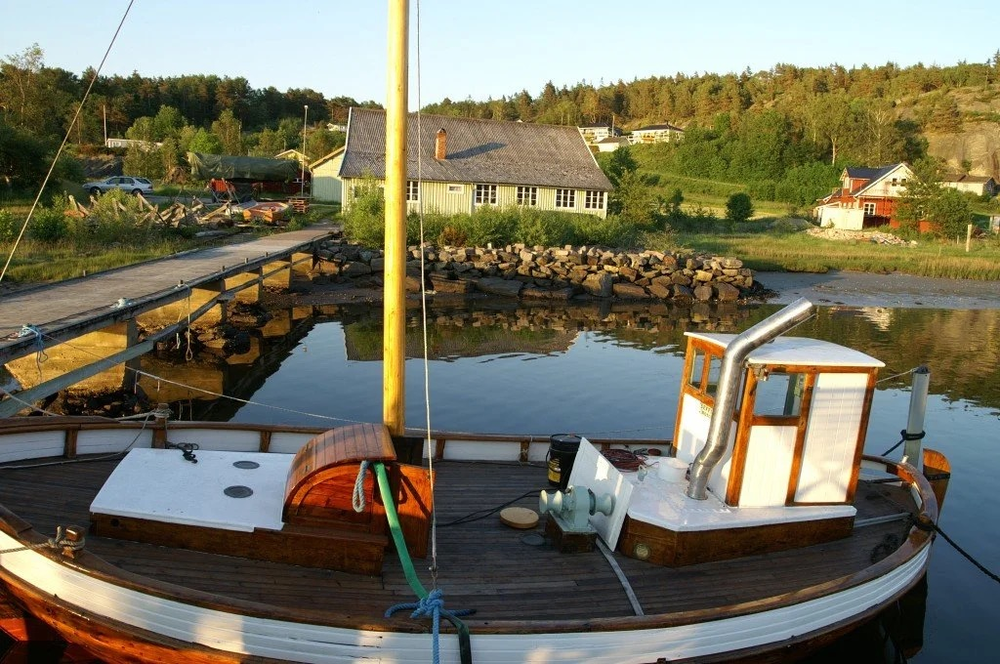
Vill du vara med och stötta föreningen i sitt arbete med att bevara varvet och en levande varvsmiljö? Då är du hjärtligt välkommen att bli medlem. Medlemsavgiften är 300 kr per år för enskild person eller familj.
Swisha till 123 268 0270 eller bankgiro 5427-7892
Kom ihåg att ange namn, adress, telefonnummer och mailadress. Vi informerar om pågående aktiviteter främst via mail.
Vill du stötta föreningen ytterligare tar vi gärna emot bidrag som kan sättas in på samma bankgiro- eller swishnummer.
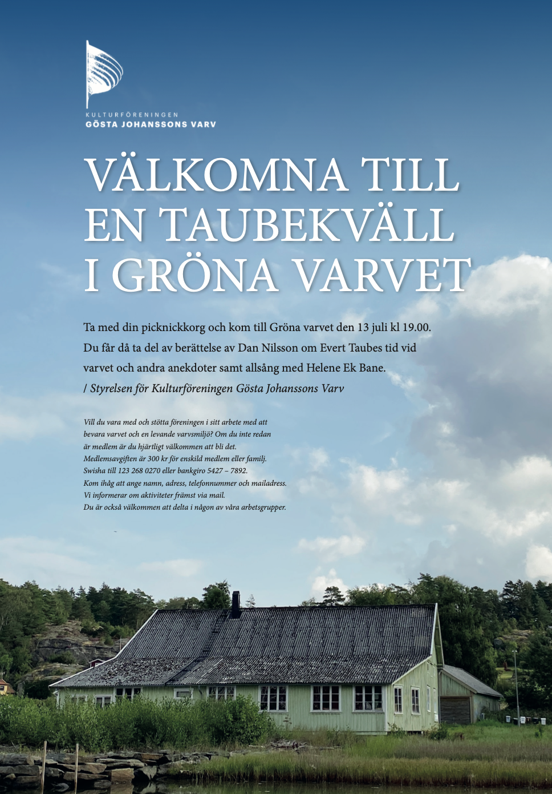
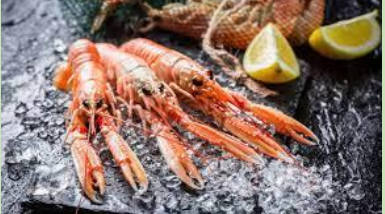
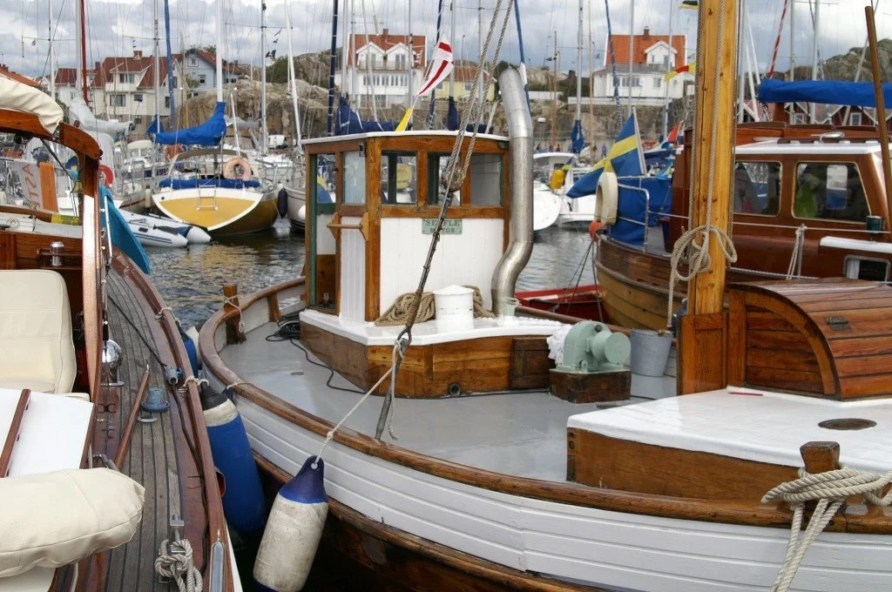
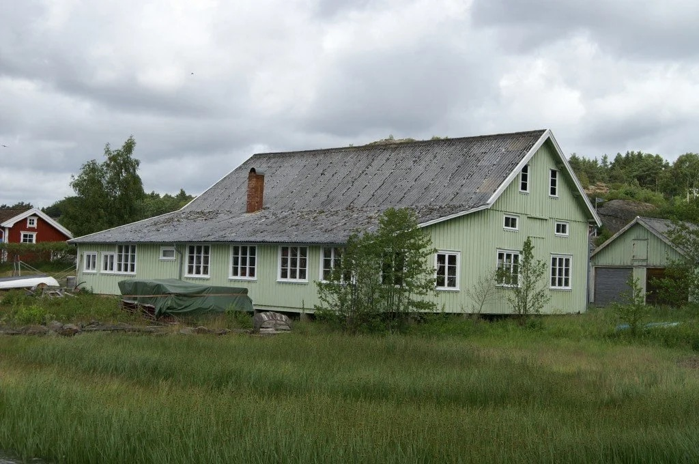
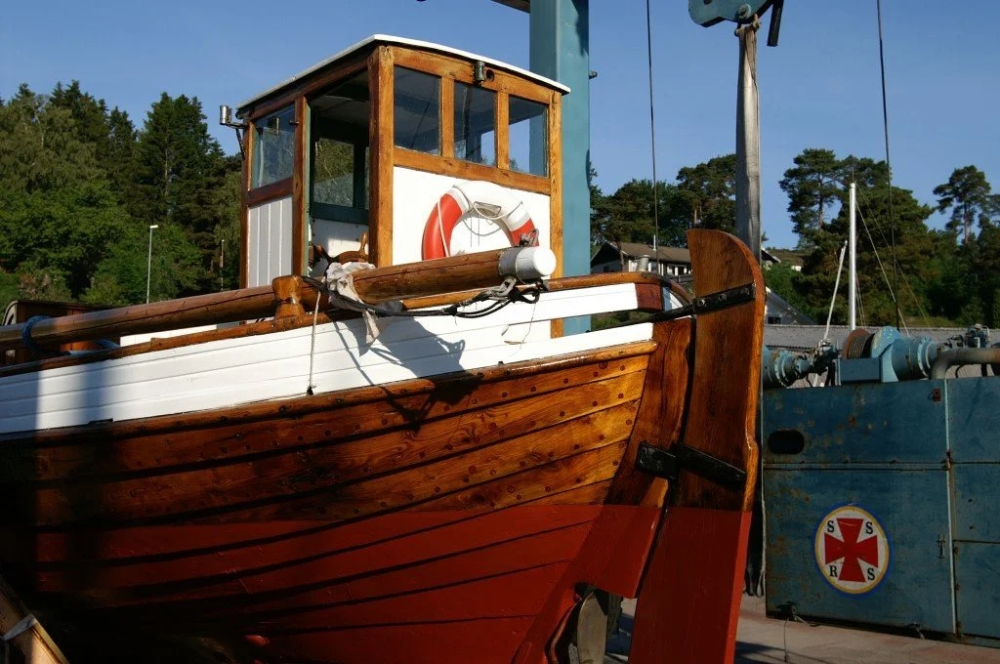
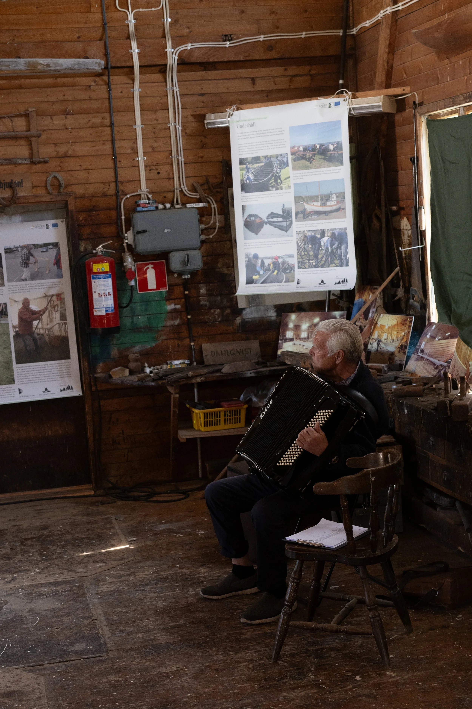
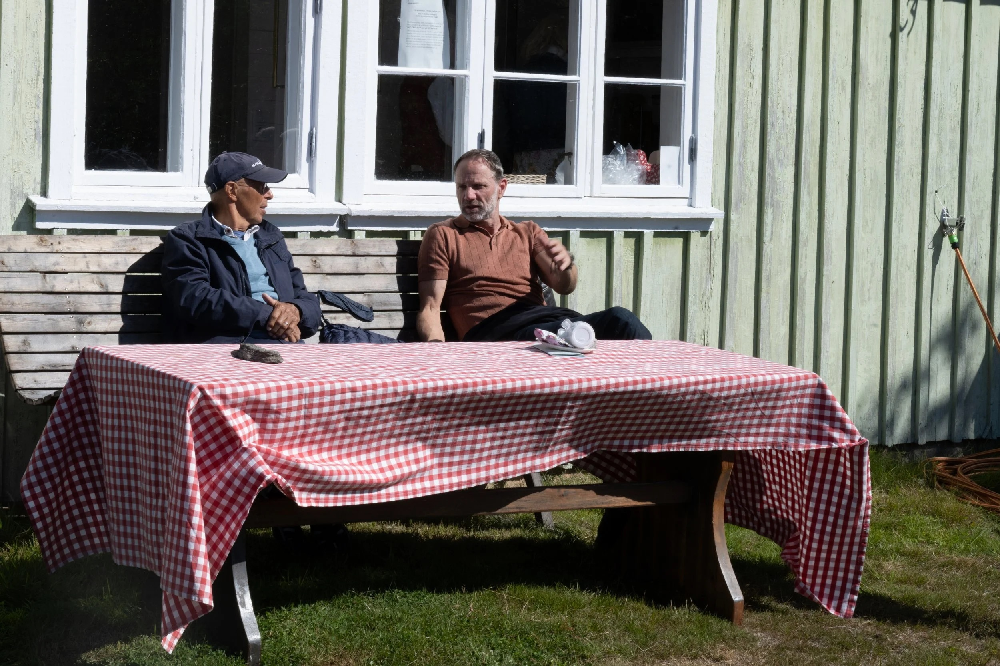
Arbete med föreningens flotta – Polstjernan, Josefin, Myra, Lucia och ekorna. Onsdagar och lördagar.
Fönsterrenovering, slipunderhåll och återupplivning av Göstas blocksåg från 1940-talet.
Söndagar 14–16. Vi bygger allt från enkla modeller till Optimisten. Öppet för alla!
Dokumentation av varvet och båtbyggartraditionen i Kungsviken i samarbete med prismavg.se.
Föredragskvällar, allsång, kräftskivor, Öppet Varv och andra arrangemang som håller traditionen levande.
Vi vill utveckla barn- och ungdomsverksamhet för att föra hantverkskunskapen vidare till nästa generation.
Klicka på bilden för att komma till utställningen
"Den nordiska klinkbåtstraditionen"
E-post:
Swish: 123 268 0270
Bankgironr: 5427-7892